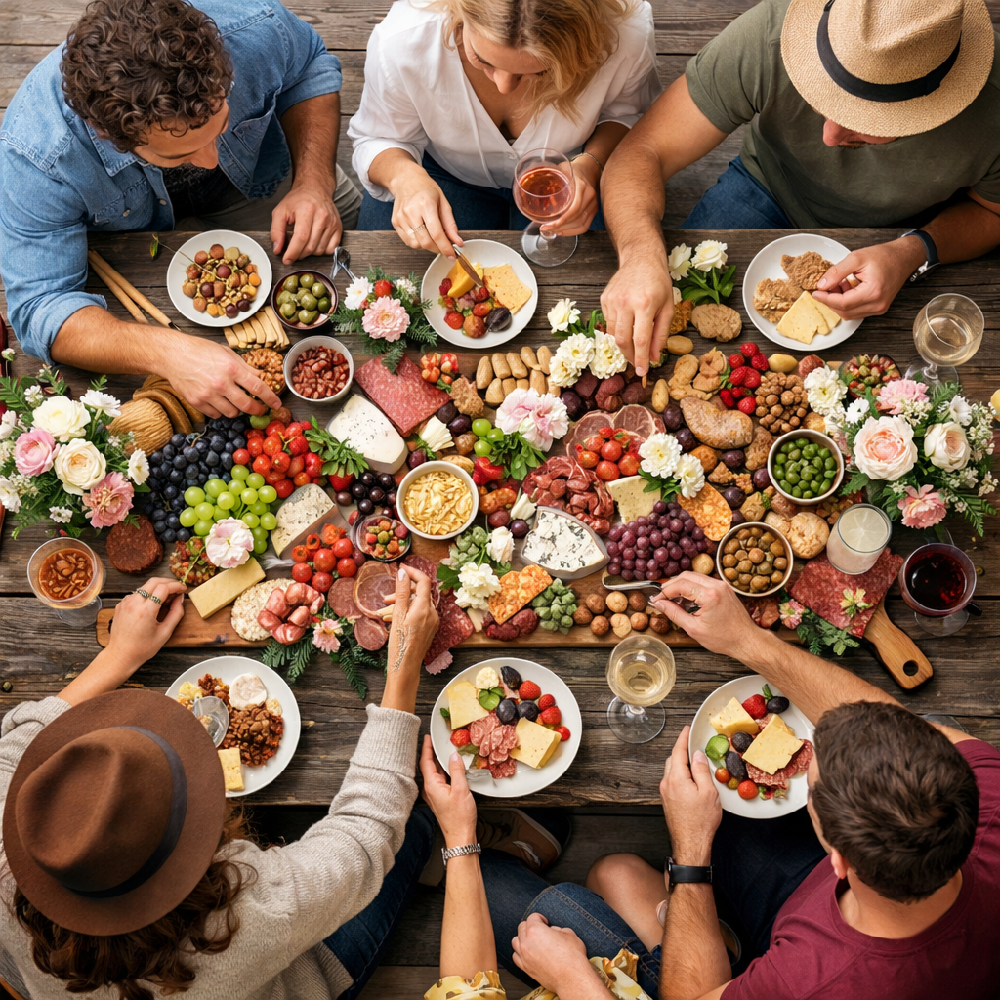

Hausgemachte Feinkost
Professionell angerichtet.
Grazing Tables Saar steht für liebevoll zusammengestellte Feinkosttafeln – handgemacht, hochwertig präsentiert und geliefert im ganzen Saarland.

Was wir machen
"Grazing Tables" also hausgemachte Feinkostbretter oder ganze reich gedeckte Tische für besondere Anlässe
Ob Geburtstag, Firmenfeier, Hochzeit oder privates Get-together: Unsere Tables sind so konzipiert, dass sie optisch wirken, unkompliziert funktionieren und im Gedächtnis bleiben.